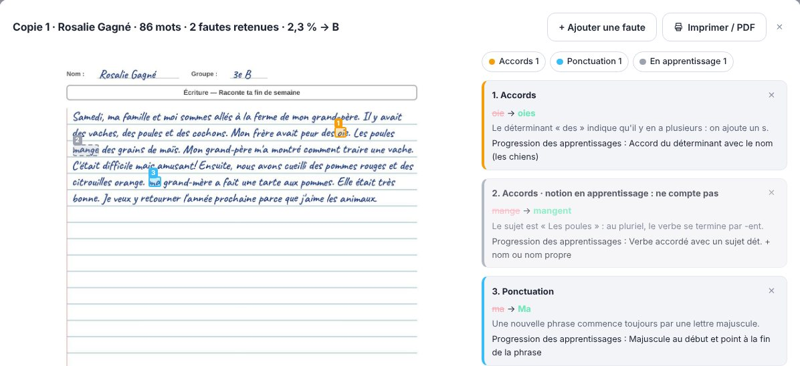

Brûle la pile fait le premier jet. Vous avez le dernier mot.
Photographiez ou numérisez les copies, même manuscrites, et ajoutez votre corrigé : chaque question reçoit une note proposée et son explication, et les fautes sont surlignées sur la copie. Vous relisez, ajustez et exportez.
Vous avez déjà une clé d’accès ? Entrez-la ici →
Sans compte · Sans carte de crédit · Aucune copie conservée · Pensé pour la Loi 25

Au primaire : seules les fautes vues en classe comptent
Choisissez l’année de vos élèves : Brûle la pile surligne les fautes sur le texte manuscrit et ne compte que les notions prévues à cette année par la Progression des apprentissages.
- Votre année, votre étape : De la 1re à la 6e année. Aux étapes 1 et 2, les notions de l’année sont « en apprentissage » ; à l’étape 3, elles comptent.
- Ce qui compte, ce qui ne compte pas : Les notions acquises sont surlignées en couleur et comptent. Celles en apprentissage sont montrées en gris pour que l’élève les voie, sans compter.
- Le nombre de mots, le % de fautes, la cote : « 86 mots · 2 fautes retenues · 2,3 % → B », selon les seuils de votre école.
- Des explications pour un enfant : « Il y a plusieurs chiens : on ajoute un s. » Sans mots savants de grammaire.
- Vous gardez le dernier mot : Chaque notion se règle d’un clic, et chaque faute se retire ou s’ajoute sur la copie.
Je suis enseignant d’histoire au secondaire, au Québec. J’ai créé Brûle la pile pour faire le premier jet de mes propres piles de copies, sans envoyer les copies de mes élèves n’importe où. Je relis toujours chaque copie : l’outil fait le premier passage, je garde le jugement.
Trois étapes, quelques minutes
Pas de formation, pas d'installation. Ça fonctionne dans votre navigateur, sur ordinateur comme sur tablette.
1. Votre corrigé
Collez vos consignes ou importez votre corrigé (PDF, photo). Points par question, réponses acceptées, critères : Brûle la pile suit votre grille, ou vous en prépare une détaillée.
2. Les copies
Glissez le PDF de la numérisation de toute la classe, des photos ou des documents Word. Brûle la pile repère où commence chaque copie, et vous pouvez ajuster.
3. Vous validez
Note et justification pour chaque question, commentaire pour l'élève. Ajustez un point en un clic et téléchargez la grille pour Excel ou votre logiciel de notes.
Corrigez aussi la langue, directement sur la copie
Un onglet dédié relève les fautes sur chaque page, les surligne par catégorie et explique la règle. Idéal pour les textes à rendre aux élèves.
- Au primaire : selon la Progression des apprentissages de l’année, avec le % de fautes et la cote
- Six catégories au choix : orthographe, accords, conjugaison, ponctuation, syntaxe, vocabulaire
- Note de langue facultative (ex. −0,5 par faute)
- Copie annotée à imprimer ou à enregistrer en PDF pour l’élève
- Fonctionne sur l’écriture à la main comme sur les textes tapés
Conçu pour que vous puissiez lui faire confiance
Une IA qui se trompe en silence ne vous fait pas gagner de temps. Brûle la pile vous montre où regarder.
Chaque point est justifié
« Écrit : 1942, attendu : 1955. » Vous voyez pourquoi chaque point a été retiré, et vous le changez si vous n’êtes pas d’accord.
Correction approfondie
Chaque copie peut être corrigée deux fois, indépendamment, par deux modèles d’IA différents, avec un pourcentage de fiabilité. Les questions où les corrections divergent sont surlignées.
Rien n’est conservé
Les copies sont traitées puis oubliées : aucune copie ni note n’est stockée sur nos serveurs. Vous téléchargez votre grille, c’est tout.
Payez à la page, sans abonnement
Une classe de 30 élèves avec des copies de 3 pages : environ 5 $ en mode rapide, 10 $ en mode approfondi (double correction). La correction de la langue compte 1 page par page. Le corrigé n'est jamais facturé. Les pages achetées n'expirent pas.
- ~5,8 ¢ la page
- ~5 classes en mode rapide, 2 à 3 en approfondi
Prix en dollars canadiens. Commencez par 30 pages gratuites. École ou centre de services ? Écrivez-nous pour un tarif de groupe.
Questions fréquentes
L'IA remplace-t-elle mon jugement ?
Non. Elle vous propose une note et une justification ; vous restez le correcteur. Tout est modifiable avant l'export, et les copies douteuses sont signalées.
Ça fonctionne avec l'écriture à la main ?
Oui, avec des numérisations ou des photos nettes. Si un passage est difficile à lire, la copie est marquée à vérifier. Si la photo est illisible, aucune note n'est inventée : la copie est marquée « Illisible » et n'est pas facturée.
Puis-je cacher le nom des élèves ?
Oui. Cochez « Masquer le nom de l'élève avant l'envoi » : le haut de la première page de chaque copie est blanchi dans votre navigateur avant l'envoi. Un nom écrit ailleurs n'est pas masqué : un code d'élève reste le plus sûr. Vous voyez toujours la copie complète et inscrivez les noms vous-même.
Quels formats de copies ?
PDF numérisés (une ou plusieurs copies par fichier), photos prises au téléphone (y compris les photos d'iPhone), documents Word (.docx) et fichiers texte. Les copies d'une même numérisation sont séparées automatiquement par élève.
Ça fonctionne pour le primaire ?
Oui. Dans « Correction de la langue », choisissez « Primaire », l’année et l’étape : seules les fautes prévues à cette année par la Progression des apprentissages comptent, et vous obtenez le nombre de mots, le pourcentage de fautes et la cote. Vous pouvez aussi corriger avec votre propre grille d’évaluation (critères et niveaux).
Quelles matières ?
Toutes celles où un corrigé ou une grille permet de juger les réponses : histoire, sciences, mathématiques (réponses et démarches), français, langues, questions à développement court. Plus votre corrigé est précis, plus la correction l’est.
Qu’est-ce qu’une « page » ?
Une page de copie d’élève (une face numérisée ou une photo). En mode rapide et en correction de la langue, une page de copie compte pour 1 page ; en mode approfondi (double correction et fiabilité), pour 2 pages. Le corrigé n’est pas compté. Une correction qui échoue n’est pas décomptée.
Que deviennent les copies de mes élèves ?
Nous ne conservons aucune copie, aucune note et aucun nom d’élève. Pour la correction, les copies sont envoyées de façon chiffrée à Google (API Gemini, offre payante) : Google ne s’en sert pas pour entraîner ses modèles et ne les garde que brièvement, pour détecter les abus. Voir notre politique de confidentialité.
Dois-je créer un compte ?
Non. Vous recevez une clé d’accès qui contient votre solde de pages. Notez-la pour l’utiliser sur un autre appareil ou recharger votre compte.
Une idée pour Brûle la pile ?
Proposez une fonctionnalité ou signalez ce qui manque dans votre matière. Je lis chaque suggestion.
Votre prochaine pile de copies, en quelques minutes
30 pages gratuites, sans carte de crédit.
Essayer maintenant